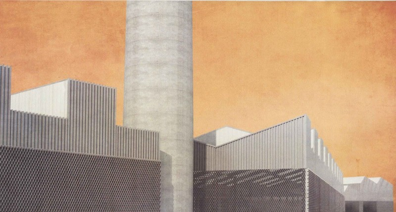
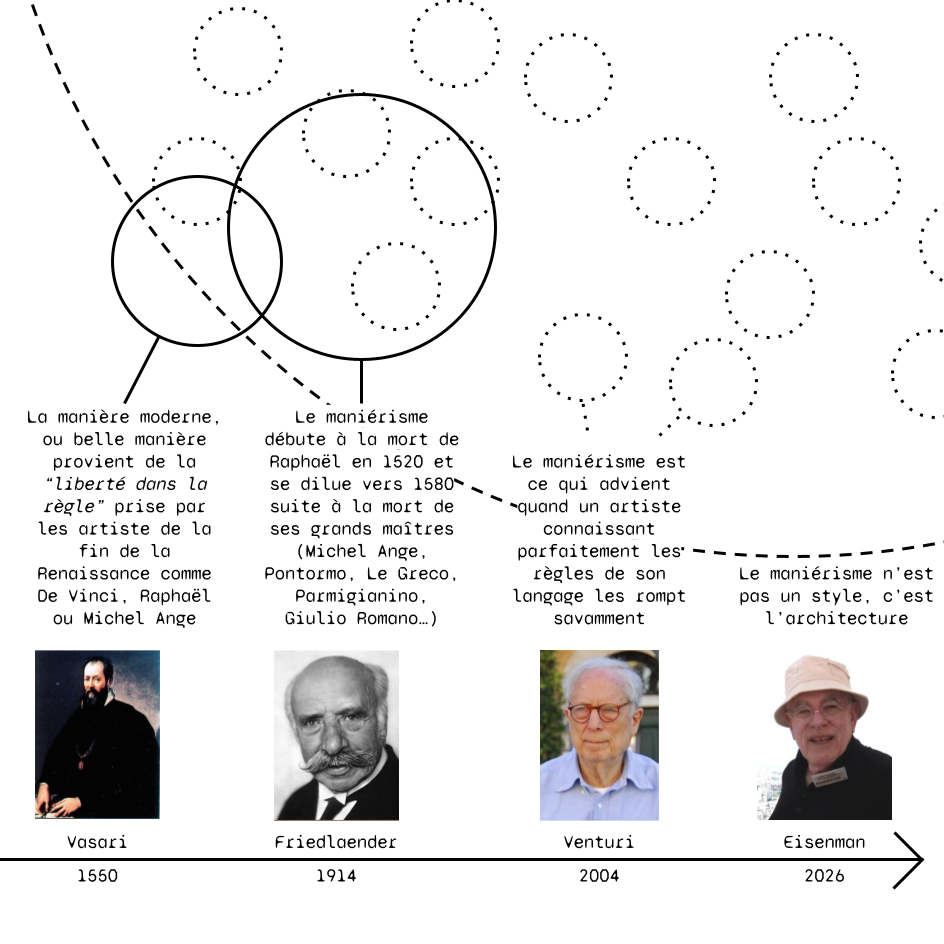
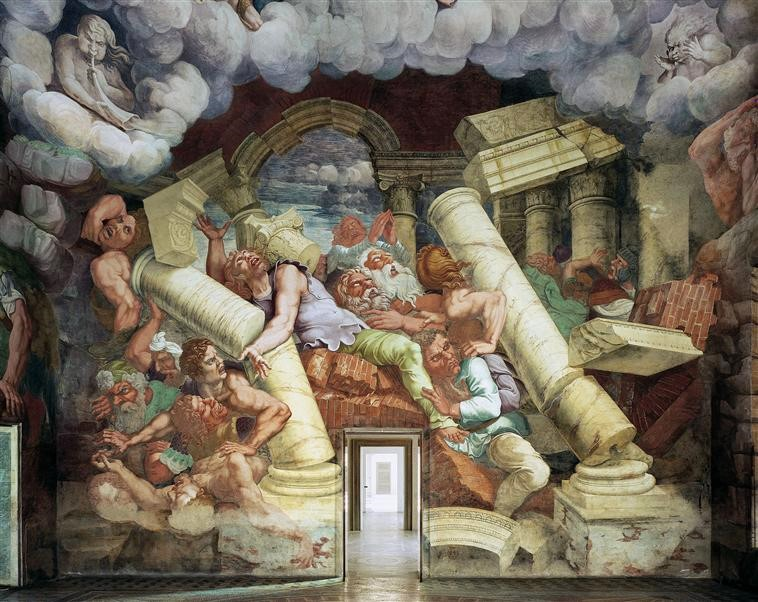
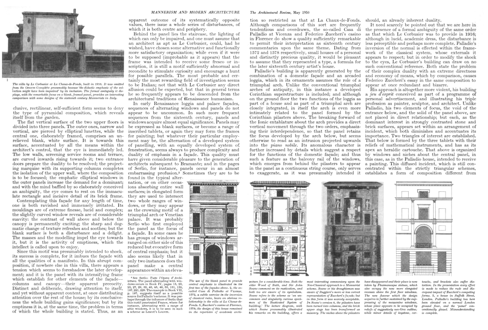
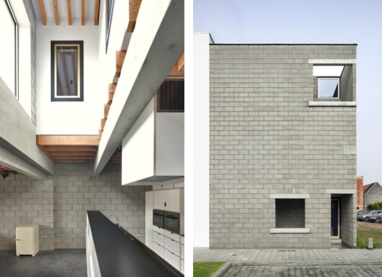
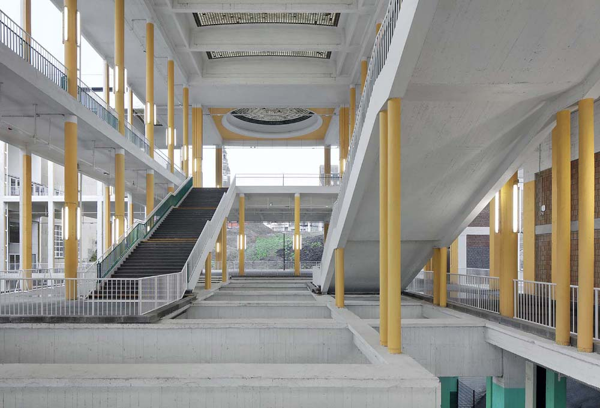

institution : ensa Paris-Val de Seine & ensa Paris Malaquais
date : journées d’études du 20 & 21 mai 2026
direction : Laboratoires LIAT & evcAu
type : enseignement & recherche
L’histoire du maniérisme comme concept historiographique est peut-être celle d’une continuelle expansion de ce que recouvre ce terme. Depuis son apparition sous la plume de Vasari en 1568, le maniérisme semble s’être propagé par vagues successives portant toujours plus loin le périmètre de recouvrement du concept (en intégrant davantage d’œuvres ou de producteurs) mais aussi en dépassant son simple usage comme catégorie d’histoire de l’art pour le voir comme une manière de penser (comme cela a pu être fait pour le modernisme aussi).
Cette croissance, dont on reviendra sur les étapes, a trouvé une forme d'apogée dans le débat contemporain, notamment anglo-saxon, dont certains acteurs soutiennent une sorte d'hégémonie du maniérisme dans toute la production actuelle - ou du moins celle digne d’intérêt. Ainsi, en janvier dernier, se tenait un colloque à la AA school de Londres fatalement intitulé : “L’inévitabilité du Maniérisme”1 en présence de plusieurs têtes d'affiche de la théorie architecturale, dont Peter Eisenman, Kersten Geers ou Mario Carpo.
Un spectre flotterait sur l’architecture européenne, des portugais de Fala aux belges de OFFICE, celui du maniérisme ? C’est du moins l’avis de Francisco Gonzalez de Canales2, organisateur du colloque, et de ses participants, avis rendu possible par une certaine définition du maniérisme et de la crise, dont il serait l’architecture.
Notre présentation d’aujourd’hui propose une définition légèrement différente des critères d'apparition des architectures maniéristes à travers une approche matérialiste historique quitte à prendre à rebrousse poil la flèche du temps et restreindre un petit peu la maniera.
La crise, c’est quelque chose qui nous intéresse à Mostro, puisque c’est de cette citation de Gramsci que l’on a tiré notre nom.
Dans la matrice matérialiste-historique, la crise, c’est ce qui arrive quand la base matérielle du monde et sa codification super-structurelle ne sont plus en accord, c’est quand la technique prend de court la culture ou quand au contraire l’organisation du monde ne tient plus que par l’inertie de son squelette socio-légal. Le “spectre” dont traite ces deux jours de discussion, ce serait donc le monstre gramscien : l’idée qui n’est pas en phase avec le monde – car arrivée trop tôt ou trop tard. Rendu impossible par la nouvelle organisation de la matière (le corps décédé) le spectre est maintenu artificiellement en présence par l’obstination de l’esprit (du hanteur et/ou du hanté).
Si s’intéresser au maniérisme - ou devrait-on dire aux maniérismes - c’est se pencher sur l’architecture de la crise, alors cela revient à partir à la chasse aux fantômes.
On l’a dit, le terme maniérisme doit son inscription dans le panthéon de l’histoire de l’art occidentale à Vasari et son édition de 1568 des “Vies des meilleurs peintres, sculpteurs et architectes”4. C’est cependant uniquement à partir du XX° siècle que les commentateurs européens - principalement germaniques - se saisissent de cette époque entre la renaissance et le classicisme, la qualifiant alors de maniériste. On doit notamment à Walter Friendlaender en 1914 une première tentative de définition par la positive de cet interstice historique. Le maniérisme est alors reconnu comme un mouvement artistique qui se différencie de son prédécesseur par l’abandon du cadre rigide des règles de représentation classique pour au contraire rechercher une individualité des propositions artistiques visant le beau plus que le vrai ou le juste.
Dans la tradition classique de l’historiographie artistique du XIX° siècle, Friedlaender borne son nouveau courant selon les périodes de productions des artistes autour desquels il construit son corpus. L’apparition du maniérisme et puis sa dilution dans le classicisme restent le fait de grands hommes comme Michel Ange, Pontormo ou Romano.
Les années 60 voient des penseurs de formation marxiste challenger cette vision de l’histoire en proposant une approche plus historico-matérialiste du maniérisme qui place la crise au centre de son discours. Arnold Hauser ou Manfredo Tafuri, réinterprètent alors le maniérisme comme une stratégie formelle de réponse consciente aux crises structurelles qui traversent alors l’Italie :
Hauser lie notamment l’apparition du maniérisme à la mise en place du capitalisme au XVI° siècle, via le début de l’accumulation primordiale et la création de la sphère financière qui entraîne alors l’apparition du sentiment d’aliénation et le début de la fétichisation de la marchandise et avec elle de l’art. Autrement dit, la production artistique subit le même sort que le reste de la production et se déterritorialise, devenant valeur d’échange indépendante de son contexte de réalisation. C’est notamment le siècle du tableau qui détrône la fresque comme médium de prédilection des peintres puisqu’il peut être échangé et vendu. Mais en plus de cette crise liée à une mutation de la base matérielle, les artistes maniéristes seraient aussi pris dans une crise culturelle. La révolution copernicienne et la dissolution de l’unité de l’Eglise par la réforme et la contre-réforme ont solidifié une lecture anti-humaniste du monde. Dans ce contexte, le rôle de l’art comme outil de représentation mais aussi de prescription est subitement abandonné.
Cette double crise - infra et superstructurelle - serait donc à l’origine d’un mal-être dans le champ de l’art, qui se retrouve malgré lui coupé de son rapport au monde autant dans sa production que dans sa consommation. La crise de la renaissance cause le maniérisme, donc “l’art pour l’art” et invite alors aux jeux intellectuels disciplinaires, l'œuvre d’art n’ayant plus à dialoguer avec autre chose que son propre champ.
On pourrait voir ici une première étape dans la perte de l’aura des œuvres que Walter Benjamin assigne à leur reproductibilité mécanique mais qui pourrait aussi être imputée à leur inclusion dans un marché spéculatif. Il faut aussi noter que l’invention relativement récente de l’imprimerie fait en quelque sorte entrer l’architecture maniériste dans l’ère de la reproductibilité, ce qui permet par exemple à Palladio de diffuser ses plans dans toute l’Europe sans nécessiter que l’on visite ses réalisations. En ce sens, cette période de crise fait littéralement de l’architecture un jeu de langage puisqu’on peut désormais l’écrire et la lire sans avoir à la vivre physiquement ni à l'édifier matériellement.
Prenons justement un exemple matériel pour comprendre comment la crise mène à une architecture maniériste.
Les quatre-vingts villas édifiées par Palladio dans la seconde moitié du XVI° siècle sont des commandes de familles de la Vénétie qui subissent de plein fouet les évolutions économiques relevées par Hauser : la découverte du nouveau monde déplace le commerce occidental de la Méditerranée vers l’Atlantique et la République Sérénissime est contrainte de se retourner vers son hinterland. La société de commerçants est forcée de se réinventer agriculteurs et les riches familles de la lagune assainissent de grandes propriétés agricoles en dehors de la cité. Pour commander ce nouveau moteur de la république, la société vénitienne redécouvre alors le type architectural de la villa antique qui répondait au même rôle économique. Afin d’encourager ce revirement rural nécessaire à la survie de l’économie, des acteurs politiques de l’époque vont réactiver alors culturellement l’imagerie antique via le réemploi dé-sanctuarisé du panthéisme et des diverses divinités de l’agriculture par exemple.
Dans ce contexte, le rôle de l’architecte est d’offrir à sa société de nouvelles formes construites qui doivent à la fois répondre à la crise économique actuelle tout en s’inscrivant dans une histoire glorieuse passée afin de rendre acceptable ce déclassement objectif que subissent ses commanditaires. Venise était en effet unique en Italie par la transparence de ses édifices et leur ouverture sur le paysage et sur l’espace public de la rue, là où les palazzi romain ou florentin affichaient au contraire des soubassement opaques et des angles chaînés pour démontrer la résistance de ces demeures face aux réguliers sacs des villes. Cette transparence, qui faisait dire à Palladio que Venise était la seule digne héritière des cités antiques, était due à la situation insulaire de la ville, qui pouvait déléguer le rôle de protection des biens à des personnes à la lagune et à son armada marine, sans avoir à en alourdir son architecture. Les villas du Stato da Terra vénitien ne bénéficient pas de cette protection insulaire. Pire encore, elles attisent les foudres des États voisins qui voient d’un mauvais œil l’étalement de la République Sérénissime vers l’intérieur du continent.
L’architecture terrestre de Palladio doit alors se murer et s’opacifier, ce qui contrarie l’appel aux références antiques qui l’animent. L’usage régulier de panneaux aveugles en élévation et de faux paysages en trompe l’œil à l’intérieur dont les grandes fresques de Véronèse, ne sont alors pas uniquement des jeux formels de contraire, de “and both” appréciés par Venturi et les maniéristes intellectuels : ce sont de véritables outils de compensation pour une architecture qui ne peut s’exprimer telle qu’elle le souhaiterait culturellement dans son contexte matériel d’édification.
L’architecture Palladienne est donc une architecture hantée, signe d’un repli historique qui cherche à lutter contre un mal-être matériel par des emprunts culturels à une époque révolue. Le maniérisme historique est effectivement un hantologisme.
Si Friedlaender identifie en 1914 une série de caractéristiques formelles communes aux grands maîtres maniéristes, il prévient toutefois qu’il faut avant tout de comprendre le maniérisme comme une approche de l’art qui ne peut être copiée mais doit provenir d’une déviance par rapport à la norme, des artistes eux-mêmes. La fin de la période maniériste serait justement due à une imitation des gestes maniéristes par les élèves des maîtres qui le voient alors comme une manière de faire à recopier et non plus comme des productions individuelles.
D’autres commentateurs de l’époque vont appuyer cette vision personnelle et psychologisante de ces productions tel que Max Dvorak9 mettant l’accent sur la méthode plus que sur les formes obtenues. Ils ouvrent donc la voie à une conception du maniérisme détachée de tout ancrage temporel spécifique.10 Le maniérisme peut dès lors être vu comme l'apanage des “grands maîtres” passés, actuels comme futurs qui savent tordre les règles rigides de la période dans laquelle ils s’inscrivent, pour in fine faire advenir leurs intentions personnelles - voire intimes.
C’est cette brèche critique qu'empruntent la plupart des importateurs du concept de maniérisme dans la théorie architecturale à partir des années 60 comme notamment Colin Rowe et Robert Venturi.
Dans son article de 195011, Rowe se sert ainsi du maniérisme comme argument de réinscription de l’architecture moderne dans le panorama englobant de la discipline. Il dit en somme qu'il existe à tout moment un langage normalisé commun de l’architecture, et que loin d’être disqualifiant, s’en placer en faux est le signe d’une maîtrise parfaite de ses possibilités. La comparaison du Corbusier à Palladio se base ainsi avant tout sur leur capacité commune à défier l’usage et le canon pour faire émerger une nouvelle architecture fruit de leur génie individuel. Sous cet angle, le recours au panneau aveugle en façade est surtout vu comme un pied de nez à la tradition.
Ce n’est pas étonnant que cette approche méritocrato-libérale du maniérisme, comme création individuelle de l’artiste contre son milieu, intéresse les premiers théoriciens de la post-modernité comme Robert Venturi. En effet, grâce au boom économique de l’Amérique fordiste et l’apparition de la classe moyenne, c’est tout un nouveau pan de la société américaine qui accède à la maîtrise d'œuvre (on passe de 25 à 57 000 architectes aux USA entre 1950 et 70). Pour ces enfants des suburbs qui ont grandi avec la télévision et les drive-thru, le langage classique de l’architecture, qu’il soit antique ou moderniste, est à tordre pour y intégrer leurs propres univers esthétiques.
On assiste donc au développement d’une théorie purement formelle du maniérisme, qui serait avant tout la capacité à “tricher magnifiquement” et qui requiert donc connaissance des codes à briser et irrévérence envers eux, deux qualités qui estiment naturellement avoir les jeunes cyniques de la Ivy League. Aux antipodes de l’approche matérielle de Tafuri, Venturi se permet dans Complexité et Contradiction un éventail d’exemples traversant toutes les époques, programmes et pays, preuve que le maniérisme comme méthode de manipulation ambiguë de la forme, est définitivement déterritorialisé.
Or, s’il ne nous semble pas particulièrement controversé de dire que le postmodernisme est l’esthétique qui s’est le plus rapprochée du maniérisme dans l’histoire moderne de l’architecture, c’est peut-être justement parce qu’on peut retrouver dans le contexte architectural des années 60 des similitudes avec le contexte artistique global du cinquecento.
En effet, s’il y a bien une époque indissociable du processus de financiarisation de l’économie que Hauser associait au XVIè siècle, c’est bien l’après reconstruction des années 1970. Et les conséquences architecturales de ce revirement économique post-keynésien ne se sont pas faites tarder. En bref, l’état fédéral américain, rapidement imité par ses vassaux européens, cessent de financer la construction dans les villes qui se tournent alors vers les acteurs privés pour boucler leurs budgets. La construction de bureaux prend ainsi largement le pas sur les logements car il devient notamment plus sûr pour les promoteurs de vivre de rentes, que l’on peut aligner sur l’inflation grandissante de l’époque, que via la vente à la livraison dont les bénéfices peuvent être rongés par des retards de chantier. On assiste alors notamment en Amérique du Nord à une crise de la discipline, qui doit réagir et amorcer un pivot rapide vers les nouveaux territoires du projet, ceux du tertiaire.
Pour ces commanditaires, l’architecture doit être un argument de vente et donc de revente pour la multitude d’entreprises qui vont s’y succéder. Celles-ci sont en effet désormais en concurrence pour attirer en leur sein les nouveaux cerveaux que la démocratisation des études supérieures a produit en masse.
C’est une étape de plus dans le processus de perte d’aura de l'œuvre architecturale. Cette dernière est encore une fois déracinée et uniquement confondue avec sa valeur d’échange, coupée de son Hic et Nunc comme le déplore Benjamin. A nouveau, l’artiste est aliéné du but de sa production.
D’ailleurs, on ne demande même plus aux architectes de faire les plans de la partie “utile” des édifices. Ceux-ci ont été optimisés et confiés aux ingénieurs. L’architecte corpo-maniériste des années 60-70 c'est-à-dire post-moderniste comprend qu’il est privé de penser la fonction et la question des usages et doit se contenter de la façade. D’où l’appel à l’abandon des canards pour se concentrer sur la décoration de Hangars.
Cela amène à nouveau la discipline à se refermer sur elle-même, à chercher intrinsèquement à se parler et à se surprendre, mais aussi à retrouver un sens à ce qu’elle fait. Peut-être encore plus que le modernisme à ses débuts, le post-modernisme est l’architecture du divorce des architectes avec le grand public quand bien même, c’est l’affect populaire et l’appel à des références historiques communes qui sont convoqués pour justifier leurs excès formalistes.
Sous réserve de réactiver ironiquement les grands récits collectifs passés, les post-modernistes développent en réalité un langage hermétique où la référence historique est un jargon d’initiés dont seuls les sachant peuvent comprendre les règles et détecter à quel point elles ont été admirablement brisées. Si le premier maniérisme était un hantologisme de la récession, le second est un hantologisme de la décadence.
La “présence du passé” pour reprendre le titre de la première biennale de Venise ne tente plus de reconstruire un idéal civilisationnel, au contraire, il démontre la disparition de l’architecte comme faiseur de sens.
Pour résumer, le maniérisme a été abordé au cours de son histoire, à travers deux grilles de lectures parallèles : d’une part il est vu comme un jeu formel interne à la discipline et d’autre part, il est analysé comme une réponse consciente à une époque en crise par des auteurs qui se réfugient alors dans des manipulations contradictoires de leur art.Mais c’est étonnement sous la plume du couple Venturi-Scott Brown qui avait jusque-là plutôt appartenu au premier clan, qu’on retrouvera une première forme de synthèse.
Dans le dernier chapitre de leur ouvrage de 200413, le couple de théoriciens américains semble reconnaître que si les premiers maniéristes le furent par “ennui”, l’approche maniériste serait désormais une réponse nécessaire et consciente aux nouvelles conditions de la production spatiale. Briser les règles ne serait plus seulement un jeu de sachants, mais une obligation pour les architectes-urbanistes. Parce qu’en réalité, ces règles seraient désormais trop nombreuses et contradictoires pour pouvoir toutes être suivies.
C’est notamment la stratification infinie des programmes et des chaînes de gouvernance dans les métropoles contemporaines qui est soulevée comme une bonne raison de tricher par Denise Scott-Brown. Le maniériste doit maintenant redoubler d’efforts pour trouver des stratégies adéquates : Scott Brown prend alors l’exemple de Koolhaas qui a, lui, abandonné la composition en plan pour produire des diagrammes programmatiques et agencer la superposition de plateformes aux fonctions contradictoires.
Francesco Gonzales de Canales reprend en quelque sorte le flambeau de cette synthèse d’un maniérisme nécessaire, pour organiser son colloque à la AA, et dans son livre The Mannerist Mind. Allant directement puiser dans les enseignements de Tafuri et de Hauser, il réaffirme la crise comme origine du maniérisme, et en même temps, il prolonge la tradition Venturienne en faisant à son tour son inventaire des architectes maniéristes contemporains.
Il est vrai que la production contemporaine reste immanquablement marquée par la figure de la crise, celle des subprimes ayant évidemment remplacé le sac de Rome dans la psyché des acteurs d’aujourd’hui.
L’explosion de la bulle spéculative immobilière n’a pas pour autant définanciarisé l’économie. Les stratégies économiques d’austérité se sont largement renforcées. On socialise les pertes, mais pas les gains du capital et à nouveau comme à l’époque post-moderne, c’est la commande publique qui s’en voit atrophiée.
Ainsi, là où le postmodernisme fut l’œuvre d’enfants de classes populaires qui ont eu accès à la commande noble grâce à l’ascenseur social de l’abondance post-WWII, il semblerait que le néo-maniérisme soit au contraire le fait d’une élite déclassée. Ce sont ces architectes qui auparavant se prédestinaient à des grands programmes publics iconiques et se retrouvent finalement à faire de l’architecture ordinaire, anonyme et souvent privée.
C’est du moins la thèse de Gonzales de Canales qui voit dans la crise de 2008, le traumatisme d’origine de la pratique des agences ouest-européennes citées en introduction. L’inventivité des pavillons privés et des petits équipements cantonaux de Office, Fala et consorts dans les années 2010 serait donc le résultat d’un mal-être de la profession, équivalent à celui du XVI° siècle : l’idée que l’on a appris les règles d’un monde de l'excès qui n’existe plus - du moins plus pour tout le monde. Le maniérisme contemporain est donc bien un lieu de disjonction temporelle : les échos d’une discipline grandiose y résonnent encore et hantent des architectes qui veulent la réanimer, car ils refusent de sombrer dans l’austérité opérationnelle des constructions ordinaires.
Alors, comme leurs prédécesseurs, les néo-maniéristes partent à la recherche de contre modèles comme réponses à la crise qu’ils endurent. Si les post-modernistes corrigeaient le tir de la tabula rasa de la première moitié du siècle en historicisant à outrance, le spectre qui hante les architectes payant les pots cassés de l’iconisme, est naturellement un retour à l’ascétisme disciplinaire et un certain rationalisme.
On peut voir dans la redécouverte des plans palladiens et des typologies neutres un acte de contrition de l’architecte qui fait amende honorable des excès de ses prédécesseurs.
Pour autant, le passé reste un pays étranger et le retour à l’antique n’est toujours pas possible pour les producteurs d’aujourd’hui. Ainsi, si OFFICE, Baukuh et autres raniment le poché et le tracé régulateur, ils sont matériellement contraints de le faire dans le paysage de la pénurie. C’est donc avec une ironie faussement joyeuse que l’on met en scène les parpaings d’aggloméré qui remplacent le travertin et la tôle ondulée galvanisée qui se substitue au marbre clouté. Conscients que leurs références académiques doivent entrer dans des programmes et budgets ordinaires, les maniéristes du nouveau millénaire ont réactivé l’objet à double fonction de Venturi et ont fait de leurs gaines de ventilation des colonnes ioniques.
Cependant, on s’amusera de constater qu’aujourd’hui, les agences d’architecture, dont on parle ici, répondent à des programmes qui s’éloignent plutôt de l'échelle d’une maison de la banlieue bruxelloise. Les maniéristes ‘‘frustrés’’ gagnent maintenant les projets pour le siège de la radio et télévision suisse ou pour la grande bibliothèque de Milan. Ont-ils abandonné les formes ascétiques de l’austérité pour autant ? Les manipulations des néo-maniéristes sont en réalité une aubaine, car le retour des commandes de projets nobles n’a évidemment pas été synonyme d’un retour du discours de l’excès. L’austérité est maintenue comme un état de fait dans les discours et les poutres treillis apparentes en galvanisée deviennent le signe d’une économie des moyens chic. On assiste alors sans doute à un moment où la maniera supplante le maniérisme comme le révélaient Vasari et Friedlaender. Autrement dit, l’ascétisme architectural et le jeu rationaliste des formes sont entrés sur le territoire du style, un style à imiter ou au mieux perfectionner.
Or, si les formes disciplinaires du néorationalisme ont bien été naturalisées, elles n’ont pourtant pas réussi à guérir l’architecture de ses excès. La production de la métropole suit encore et toujours la même logique qu’avant 2008. L’ordre spatial et la neutralité profitent encore et peut-être davantage aux investisseurs. Il n’y a en effet rien de mieux qu’une plateforme où tout est possible (et en plus pas trop chère à construire) pour reconfigurer à volonté une offre locative. L’architecture de l’austérité n’a fait que renforcer la superstructure néolibérale soit l’idée d’un État appauvri et d’une population devant se serrer la ceinture. On peut donc se questionner sur l’obstination des néo-maniéristes à s’évertuer à proposer les mêmes solutions architecturales aux mêmes problèmes.
En réalité, on se retrouve exactement dans le cadre de la crise gramscienne. L’Ancien Monde tarde à mourir et pourtant, certains refusent de le voir disparaître et l’imposent malgré eux de force. Pourtant, alors que l’architecture des parpaings blancs à joints tirés ne devait être qu’un remède passager le temps que la crise passe, elle a participé à retarder son dénouement en renforçant. Ce qui était à l’origine un effort consenti de remoralisation pour réparer les excès de nos pères a finalement dérivé vers un ordre systématique.
Pire encore : et si elle absorbait dans le même temps les demandes du nouveau monde à naître en promettant un futur meilleur ? Pour sauver les meubles, on retrouve chez certains maniéristes contemporains un discours théorique qui justifierait la neutralité et la quête du degré zéro de l’espace par le spectre du grand soir. Dans ses formes muettes, bouillonnerait l'émancipation d’une foule à venir capable de révolutionner les usages de l’espace. Si la promesse est tentante, le risque est de finir par s’en lasser si elle n’est pas tenue.
La crise de 2008 était le signe visible de l’inconsistance du logiciel néolibéral.Pourtant, cette nouvelle maniera renforce, malgré elle, on l’espère, la présence de son spectre. On appelle donc de nos vœux à un sursaut de maniérisme, c'est-à-dire un maniérisme de stratégie et non plus de formalisme.
Contre-intuitivement, plutôt que de voir dans les conditions matérielles de l’austérité un moyen pour faire la promotion des formes disciplinaires, elle pourrait être justement une occasion stratégique de retourner l’idée d’excès. Contre les plateformes neutres, les principes constructifs optimisés économiquement, peuvent justement être détournés stratégiquement pour maximiser les configurations d’espaces, les recoins chaotiques et toute sorte de fonctions doubles et de dispositifs ambigus échappant à la récupération du marché. N'abandonnons peut-être pas définitivement la piste du maniérisme. La contradiction comme méthode est aussi un moteur de conflictualité au sens politique du terme et peut-être que le rôle des prochains maniéristes sera de manipuler à l’excès les codes hérités de l’austérité pour rendre l’architecture véritablement monstrueuse dans sa matière :
Suite à cette communication, Léa Mosconi, médiatrice du panel, nous a interrogé vis à vis des autres pratiques post-2008 qui ne s’inscrivent pas dans ce repli disciplinaire citant sans les nommer les collectifs, les architectes de campagne et autres praticiens inter-disciplinaires.
Il nous semble que ces architectes ne sont pas des acteurs dont l’ethos de base amenait à vouloir saisir les sujets et programmes que la crise de 2008 a dérobés à leurs collègues maniéristes frustrés. La manière de subir la crise pour cette tranche de la progression n’est pas tant architecturale que sociale, et puis rapidement écologique. Pour ces acteurs, 2008 n’est pas seulement une crise de la commande, à laquelle la forme doit s’adapter, mais une crise de la redistribution, de la captation de la richesse et du pouvoir, face à laquelle toute la société et non seulement les producteurs de bâti doivent s’organiser.
L’intégration de stratégies extra-architecturales dans le processus de ceux que la littérature a dénommé - un temps du moins - hétéronomistes, reste donc bien un symptôme de la crise, même si la réponse apportée ne soit pas formellement aussi maniérée.
Il nous était important d’insérer cette question et sa réponse (améliorée et complétée par rapport à ce que nous avons pu formuler sur le moment), car elle permet de dissiper un malentendu que le premier texte peut laisser planer.
En présentant le maniérisme comme l’architecture qui émerge dans les périodes de transition, on pourrait en effet donner à croire qu’entre ces épisodes tumultueux, la superstructure et la base matérielle atteindraient un état plus ou moins stable, qui permet dans notre cas à un style proprement constitué d’émerger et se maintenir légitimement. Entre les crises, le monde s’apaiserait. Or, si c’est peut-être le cas (et encore) au sein de la discipline - considérée alors comme un champ de l’activité humaine un peu protégé - il nous est important de rappeler que la lutte entre les classes persiste. Seulement la nouvelle organisation matérielle et culturelle du monde a modifié les rapports d'interaction et de domination de sorte à rendre moins claire cette conflictualisation.
Le non maniérisme des architectures hétéronomistes serait alors le signe de leur position non-dominante dans l’organisation sociale, ou du moins de la position de leurs commanditaires, de leurs usagers, et peut-être de leurs auteurs. Il n’est pas étonnant que ces derniers officient davantage dans les marges métropolitaines ou dans les territoires ruraux délaissés. Pour eux, le désordre n’a pas attendu la crise, et leur agilité pour lier formes construites et processus extra-architecturaux est le fruit d’une position constamment perturbée, car toujours en lutte.

1. M. Carpo & F. Gonzales de Canales (organisateurs), The Inevitability of Mannerism, AA School, Londres, 30 janvier 2026. archive vidéo ↩
2. F. Gonzales de Canales, The Mannerist Mind, an architecture of Crisis, Actar Publishers, 2023 ↩

3. A. Gramsci, Les Cahiers de Prison, Cahiers 3, Paris, Gallimard, 1983 [1948] ↩
4. G Vasari, Le Vite de' più eccellenti architetti, pittori et scultori italiani, da Cimabue infino a' tempi nostri, 1550 ↩
5. W. Friedlaender, Mannerism and Anti-mannerism in Italian painting, Schocken Books, 1957 p.24. [d’après un discours de 1914 pour sa conférence inaugurale à l’université de Fribourg] (nous traduisons)↩
6. A. Hauser, Mannerism, the Crisis of the Renaissance and the Origins of Modern Art, Knopf, 1965, p.7 (nous traduisons) ↩

7. W. Benjamin, L’oeuvre d’art à l’époque de sa reproductibilité technique, Allia, 2011 [1935] ↩
8. W. Friedlaender, op.cit. ↩
9. M. Dvořák, Kunstgeschichte als Geistesgeschichte,1924 ↩
10. Pour un inventaire des différents aspects du maniérisme dans le champ de l’histoire de l’art et de l’architecture voir D. de Meyer, “Mannerism, modernity and the modernist architect, 1920-1950”, The Journal of Architecture, 2010 ↩
11. C. Rowe, “Mannerism and Modern Architecture”, The Architectural Review, 1950 ↩

12. M. Sarfatti Larson, Behind the Postmodern Facade: Architectural Change in Late Twentieth-Century America, Berkeley, University of California Press, 1993 (nous traduisons) ↩
13. R. Venturi & D.Scott-Brown, Architecture as Sign and System, for a Mannerist Time, The Belknap Press, 2007 ↩
14. K. Jormakka & D. Kuhlmann, "An Interview with Denise Scott Brown and Robert Venturi", Forum: Architektur & Bauforum (nous traduisons), 2005 ↩

15. Kersten Geers, Architecture without content, Harvard magazine, 2016, p.164 (nous traduisons) ↩

16. Kersten Geers & David Van Severen en conversation avec Enrique Walker, 2G, 2012, p.174 (nous traduisons) ↩
17. M. Tafuri, Théorie et histoire de l'architecture, 1968 ↩